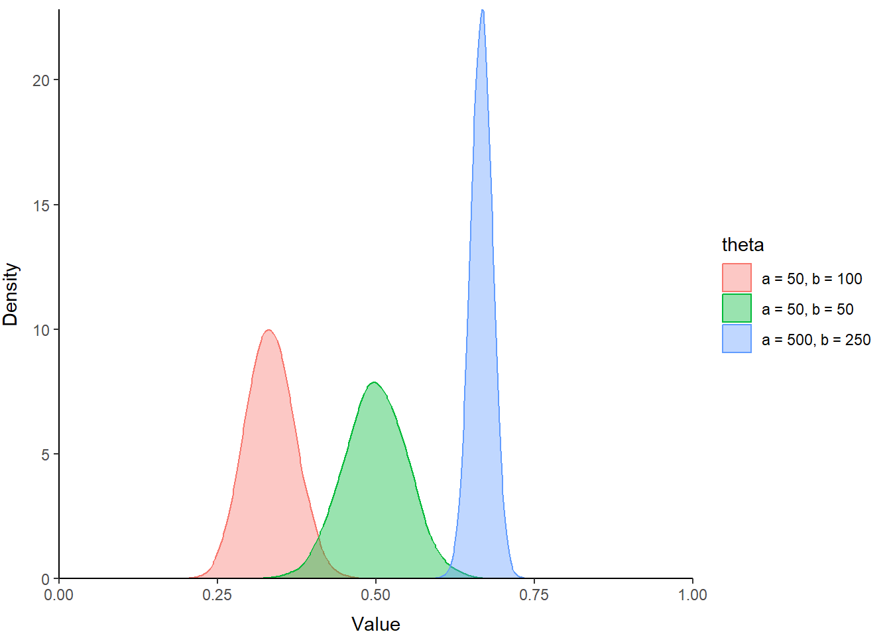
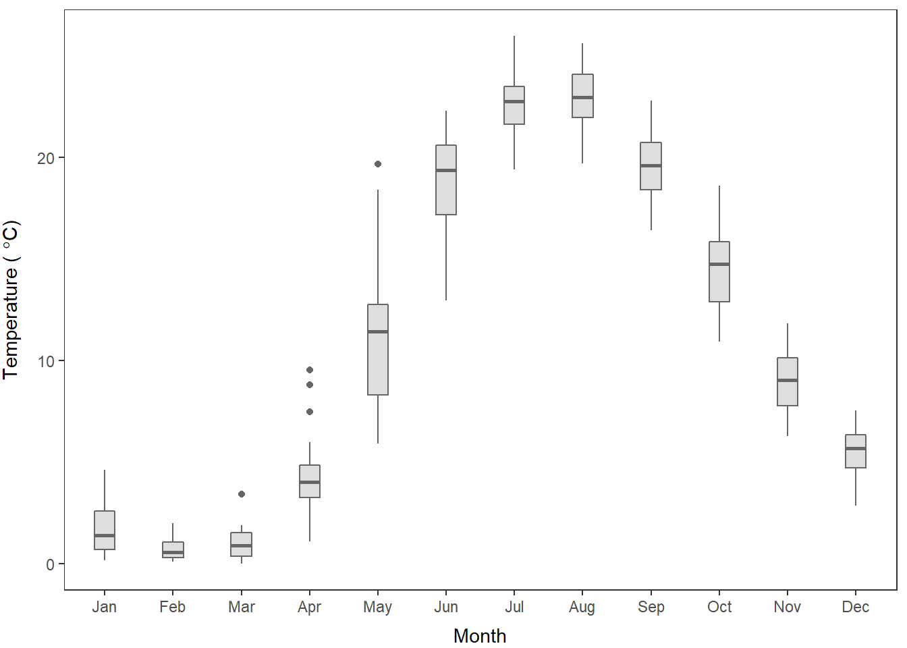

4.3 Plotting with ggplot2
Plotting with ggplot2 and the dozens of packages that use it is a bit different than plotting with base graphics in R. Part of the reason for this is that it uses a work flow that is similar to the data manipulation we have looked at so far. In general, you could think of this as creating a canvas, applying some routine aesthetics based on the data structure (e.g.grouping), and then adding layers on to the canvas like we did with base graphics.
It takes a little getting used to, but youll see how powerful it can be for multifaceted plots when we get to later chapters. Well walk through the same plots that we did in base graphics, but this time well use the ggplot() function and layer on the pieces.
4.3.1 Histograms
The default histogram is easy to create with ggplot() and a geometry layer. We start with the ggplot call, and then add the histogram geometry, geom_histogram(), like this. I usually save the plot to an object with an arbitrary name I dont use for anything, like p or s or v, and then print it explicitly.
# Histogram of water temperature across
# all dates and depths
p <- ggplot(otsego, aes(x=temp)) + geom_histogram(bins=30)
print(p)Right away this looks a lot prettier than the default histogram that we produced with base graphics. Of course, we can customize just like we did before.
Lets add labels for the x and y-axis next:
# Histogram of water temperature across
# all dates and depths
p <- ggplot(otsego, aes(x=temp)) +
geom_histogram(bins=30) +
xlab(expression(paste("Temperature (", degree, "C)"))) +
ylab("Count")
print(p)We can also scale the x-axis and the y-axis like we did in the base graphics example.
# Histogram of water temperature across
# all dates and depths
p <- ggplot(otsego, aes(x=temp)) +
geom_histogram(bins=30) +
xlab(expression(paste("Temperature (", degree, "C)"))) +
ylab("Count") +
scale_x_continuous(limits=c(0, 25), expand = c(0, 0)) +
scale_y_continuous(expand = c(0, 0))
print(p)We can modify each of other layers individually, all at once using preset ggplot themes or by modifying a pre-defined theme.
Lets have a look at how a theme changes the appearance. I am going to add theme_bw() here, but check out the others linked above. I also add a few adjust the position of the x- and y-axis labels and removed the panel grid in the theme() function after applying a theme.
# Histogram of water temperature across
# all dates and depths
p <- ggplot(otsego, aes(x=temp)) +
geom_histogram(bins=30) +
scale_x_continuous(limits=c(0, 25), expand = c(0, 0)) +
scale_y_continuous(expand = c(0, 0)) +
xlab(expression(paste("Temperature (", degree, "C)"))) +
ylab("Count") +
theme_bw() +
theme(
axis.title.x = element_text(vjust = -1),
axis.title.y = element_text(vjust = 3),
panel.grid = element_blank()
)
print(p)Spend some time practicing this and changing options to see what you can come up with. Be sure to check out the descriptions of the options you can pass to theme by running ?theme to get the help file.
4.3.2 Scatter plots
Now that we have a basic feel for the ggplot2 work flow, changing plot types is really easy because all of the parts of our plots work together in the same way.
As a reminder, we previously built scatter plots of surface temperature in Otsego Lake, NY by month using base graphics.
Go ahead and subset the data again:
surface <- otsego %>% filter(depth == 0.10)Now, we can make the default scatterplot:
s <- ggplot(surface, aes(x = month, y = temp)) +
geom_point()
print(s)
At a glance, this already looks a lot nicer than the default scatterplots from base graphics, but we still have a lot of work to do. Plus, we get ggplots own odd behaviors when it comes to the x-axis scale and titles. So, lets get to work!
First, well replace the default axis titles and add the theme_bw() that we used above, with the same modifications to axis positions and grid lines.
s <- ggplot(surface, aes(x = month, y = temp)) +
geom_point() +
xlab("Month") +
ylab(expression(paste("Temperature ( ", degree, "C)"))) +
theme_bw() +
theme(axis.title.x = element_text(vjust = -1),
axis.title.y = element_text(vjust = 3),
panel.grid = element_blank()
)
print(s)Okay, now we need to fix that pesky x-axis scale to use whole months or text labels.
To fix the axis scales, weve actually got to do a little bit of work this time. In this case the easiest thing to do is probably to make a categorical variable out of the column month, which is an integer. We can do this using some fancy indexing with the built-in object that contains month abbreviations, month.abb in base R.
surface$c_month <- factor(month.abb[surface$month], levels=month.abb)Whoa, that was a heavy lift (sarcasm). Lets see how that changes the appearance of our plot:
s <- ggplot(surface, aes(x = c_month, y = temp)) +
geom_point() +
xlab("Month") +
ylab(expression(paste("Temperature ( ", degree, "C)"))) +
theme_bw() +
theme(axis.title.x = element_text(vjust = -1),
axis.title.y = element_text(vjust = 3),
panel.grid = element_blank()
)
print(s)This is starting to look really nice.
Finally, we just add a little transparency to the points by specifying alpha = 0.2 inside of geom_point() and we are good to go!
s <- ggplot(surface, aes(x = c_month, y = temp)) +
geom_point(alpha = 0.2) +
xlab("Month") +
ylab(expression(paste("Temperature ( ", degree, "C)"))) +
theme_bw() +
theme(axis.title.x = element_text(vjust = -1),
axis.title.y = element_text(vjust = 3),
panel.grid = element_blank()
)
print(s)Looks just like the one we made with base graphics!
4.3.3 Lines
Most of the time we plot line graphs, whether in base graphics or using ggplot2, we are going to be adding them to existing plots. This was really straightforward in base graphics. It is only slightly more complicated in ggplot2.
Well start with the default line graph, and then add it to the scatter plot from the previous section.
Lets calculate monthly means of surface temperature in Otsego Lake again:
mids <- surface %>%
group_by(month) %>%
summarize(avg = mean(temp))Now plot it with ggplot():
lp <- ggplot(mids, aes(x = month, y = avg)) +
geom_line()
print(lp)There you have it!
Now, we just need to add this to our scatterplot that we made previously. To do this, we have to insert geom_line() in the code, but we must specify
s <- ggplot(data = surface, mapping = aes(x = c_month, y = temp)) +
geom_point(alpha = 0.20) +
geom_line(mapping = aes(x = month, y = avg),
data = mids,
color = 'gray40',
lty = 3,
lwd = 1) +
xlab("Month") +
ylab(expression(paste("Temperature ( ", degree, "C)"))) +
theme_bw() +
theme(axis.title.x = element_text(vjust = -1),
axis.title.y = element_text(vjust = 3),
panel.grid = element_blank()
)
print(s)
We will continue to use this approach throughout the book to plot raw data and model predictions. So, if it is giving you trouble now, spend some extra time with it.
4.3.4 Boxplots and
To wrap up our tour of plotting examples in ggplot2, we will reproduce (more or less) the box plots we made in base graphics.
Make the default box plot of surface water temperatures in Otsego Lake, NY. Notice that we use the c_month variable that we made previously in the surface data so R knows these are groups.
bp <- ggplot(surface, aes(x = c_month, y = temp)) + geom_boxplot()
print(bp)If we add changes we made to previous plots here, then we can get a cleaner look:
bp <- ggplot(surface, aes(x = c_month, y = temp)) +
geom_boxplot(color = 'gray40', fill = 'gray87', width = 0.3) +
xlab("Month") +
ylab(expression(paste("Temperature ( ", degree, "C)"))) +
theme_bw() +
theme(axis.title.x = element_text(vjust = -1),
axis.title.y = element_text(vjust = 3),
panel.grid = element_blank()
)
print(bp)
And, of course, we can add our jittered, raw data points over the top to show the spread.
bp <- ggplot(surface, aes(x = c_month, y = temp)) +
geom_boxplot(color = 'gray40', fill = 'gray87', width = 0.4) +
geom_jitter(size = .5, width = 0.1) +
xlab("Month") +
ylab(expression(paste("Temperature ( ", degree, "C)"))) +
theme_bw() +
theme(axis.title.x = element_text(vjust = -1),
axis.title.y = element_text(vjust = 3),
panel.grid = element_blank()
)
print(bp)